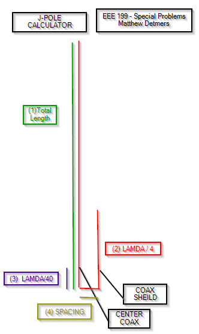

Desired Output Frequency:
Coaxial Velocity Factor:
OUTPUT
Physical Dimensions
(1) Total Length: Meters
(2) Smaller Vertical Height Meters
(3) Coax Tap Height from Bottom: Meters
(4) Horizontal Spacing Meters
Electrical Characteristics
Wavelength Meters
Reactive Near Field Distance < Meters
Radiating Near Field Distance < Meters
Far Field > Meters
References:
[1] J-Pole antenna, Wikipedia
[2] Introduction to the J Pole Antenna, VK2GX
[3] Radio and Electronics Cookbook - Radio Societey of Great Britian